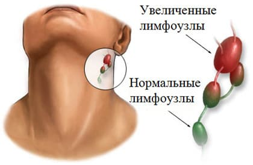
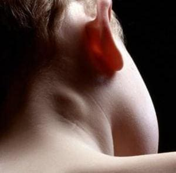
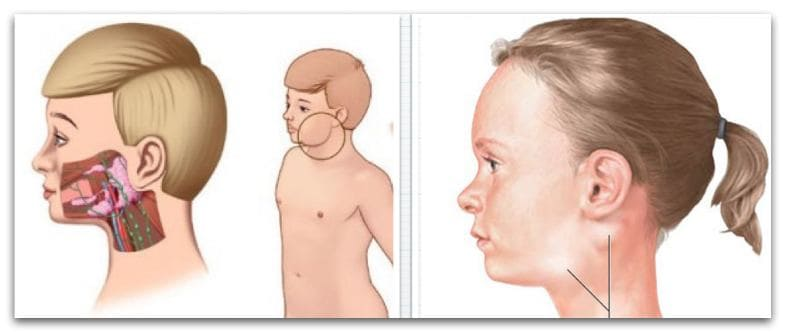

Ох уж эти лимфоузлы! Сколько родительских тревог из-за них, сколько страхов, сидения в гугле по ночам, сдавания бессмысленных анализов, посещения педиатров, иммунологов и гематологов.

Главное, чего боятся родители, – это онкологические заболевания. Действительно, они иногда стартуют с изолированного увеличения лимфоузла(ов). Но если мы слышим за окном стук копыт, то это скорее лошадь, чем зебра, а если мы видим ребенка с увеличенным лимфоузлом, особенно на голове/шее, особенно когда есть очевидная причина для увеличения, это скорее доброкачественная лимфоаденопатия, чем злокачественная.
Давайте разберем основы.
Лимфатическая система – это «канализация» тканей нашего тела. Она начинается слепыми мелкими сосудами, которые собирают лимфу из тканей, и постепенно сливаются в более крупные. По пути их следования расположены лимфатические узлы – утолщения, которые «фильтруют» лимфу, очищают от токсинов, бактерий и вирусов. После очистки лимфа дальше течет по лимфатическим сосудам, уже очищенной снова вливается в общий кровоток и смешивается с кровью. Это норма, так должно быть. Отсюда следует, что: лимфатические узлы – НОРМАЛЬНЫЕ органы, а не новообразования; они есть всегда, а не появляются при проблемах. Есть места, где они расположены поверхностно, и там их всегда можно найти пальцами на ощупь: это многие группы лимфоузлов головы и шеи и паховые лимфоузлы. У худощавых детей они не только пальпируются, но и могут быть видны глазом при определенных положениях тела (повороте головы набок, например). Размер здорового лимфоузла от 3 до 10 мм, он подвижный, не болит, кожа над ним не изменена.
Очевидные и безопасные причины для увеличения лимфоузлов – это не только разнородные ОРВИ. Это и более конкретные болезни, например инфекционный мононуклеоз, или болезнь кошачьих царапин , различные кожные болезни (импетиго, разные дерматиты со вторичной бактериальной инфекцией) и т. д. В таких случаях достаточно подавить причину воспаления, когда это возможно, или просто дождаться самопроизвольного выздоровления, и лимфоузлы придут в норму.
Раз работа лимфоузла в том, чтобы фильтровать и обеззараживать, то когда работы много – он увеличивается. Это нормально. Вы же не пугаетесь, когда тренируетесь в спортзале и у вас увеличиваются бицепсы? Вот и не пугайтесь, когда есть очевидная причина для увеличения лимфоузла. Например, ребенок ходит в сад, часто болеет ОРВИ, и у него увеличенные лимфоузлы на шее (куда оттекает лимфа от горла и носа). А не ходил – не были увеличены. Все логично, вспоминайте спортзал.
Иногда (редко) лимфоузлы не справляются с нагрузкой, и не просто увеличиваются, а воспаляются или даже нагнаиваются. И тогда это называется не лимфоаденопатия (увеличение) а лимфаденит (воспаление)

или даже гнойный лимфаденит (гнойное расплавление). В таких ситуациях иногда следует назначать антибиотик, чтобы помочь лимфоузлу справиться с бактериями. А если момент упущен и уже появился гной, то лимфоузел иногда приходится вскрывать хирургически или даже иссекать.
Но воспаление лимфоузла (и тем более нагноение) – это не что-то незаметное или текущее исподволь, оно имеет яркую клиническую картину.

Вокруг лимфоузла возникает отек, боль, покраснение кожи, ограничение движений (ребенок щадит больное место). Общее самочувствие тоже страдает: ребенок выглядит вялым и больным, у него повышается температура тела, падает аппетит, настроение и активность. Если вы видите у ребенка такие симптомы, постарайтесь поскорее обратиться к педиатру и/или хирургу.
Но, как я уже сказал, больше всего родители боятся онкологических причин увеличения лимфоузлов. Редкие болезни бывают редко, но иногда все же бывают.
Лимфоузлы, увеличенные из-за злокачественных новообразований, не болят, не воспаляются (обычно) и в целом могут никак не беспокоить.
Нет никаких надежных симптомов, по которым можно было бы внешне отличить «злой» лимфоузел от разных доброкачественных причин увеличения. Но косвенные признаки все же есть:
✗ отсутствие очевидной причины для увеличения. Очевидной врачу после тщательного сбора анамнеза и осмотра, а не вам;
✗ увеличение лимфоузлов вне зоны головы и шеи. Дети часто болеют ОРВИ, и это самая частая причина увеличения лимфоузлов. Но при ОРВИ лимфа оттекает в узлы головы и шеи, и они растут. А вот увеличение лимфоузла (узлов) вне этой зоны более тревожно в плане «злых» причин. То есть при прочих равных условиях увеличенный подмышечный лимфоузел будет более тревожной находкой, чем настолько же увеличенный подчелюстной;
✗ увеличение лимфоузлов из разных, не взаимосвязанных групп. Пример взаимосвязанных: подколенные и паховые, с одной стороны. Пример не связанных: надключичные и паховые узлы или подколенные и подмышечные;
✗ ну и один из самых надежных критериев: увеличение лимфоузла более 2 месяцев подряд, более 2–3 см в диаметре.
ИТАК, повторим основное.
✗ лимфоузлы есть всегда и у всех, при патологии они не появляются, а увеличиваются;
✗ увеличение лимфоузлов у детей бывает часто, более заметно у худеньких детей и почти всегда безопасно и проходит само. Но если, помимо увеличения лимфоузлов, у ребенка есть другие проблемы (сыпь, лихорадка, отказ от еды, потеря веса, резкая заложенность носа или др.), то следует обратиться к педиатру и посоветоваться;
✗ злокачественные новообразования иногда первым своим проявлением имеют увеличение лимфоузлов. Полностью исключить «зло» можно только у онколога или гематолога, после тонкоигольной биопсии или хирургического иссечения с последующим гистологическим исследованием лимфоузла.
Косвенными настораживающими признаками можно считать:
– увеличение без очевидной причины;
– увеличение более 2–3 см более 2 месяцев подряд;
– увеличение в любой зоне, кроме головы и шеи, особенно в нескольких, не связанных между собой зонах.
✗ если вы нашли у ребенка лимфоузлы менее 1 см (пусть даже они выпирают из-под кожи и видны глазом) в области головы и шеи, если раньше он часто болел ОРВИ, если лимфоузлы то больше, то меньше от недели к неделе, никак не беспокоят ребенка местно и не нарушают его общее самочувствие, то, скорее всего, вам совершенно не о чем волноваться.
(Сергей Бутрий "Здоровье ребенка: современный подход")